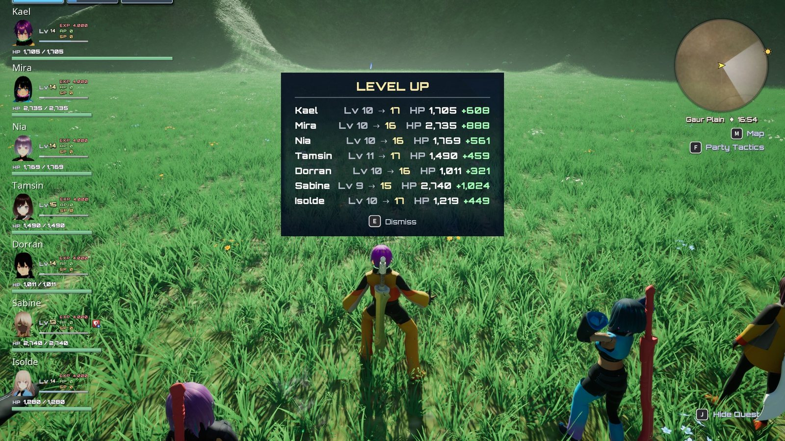

Progression¶
All · 15 min read · No code

The level-up panel after a fight.
Levels, experience, Art Points, learned arts, art palettes, skill progress and the party's gold are
all owned by one component on the player controller, UXenoCoreProgressionComponent, set up as the Blueprint
Game/BP_XenoCore_Progression. The one idea: progress is stored per character, keyed by the member
definition, not by the pawn. A benched character has no body, but still has a level. When a body is
spawned, it reads its level from here and applies its statline at that level.
At a glance
In play: kills pay EXP, Art Points and SP; a level-up banner lists everyone who levelled; each level raises the character's stats and fully heals them.
What you can change, no code:
- How much EXP each level needs, per character: Tune progression
- What an enemy pays: Experience Reward and Art Point Reward on the enemy Blueprint
- Whether benched members earn, the starting gold, palette slot unlock levels:
Game/BP_XenoCore_Progression› Class Defaults. Listed under What you can change.
How it fits together¶
| Piece | Asset | What it does |
|---|---|---|
| Progression component | Game/BP_XenoCore_Progression |
Holds every character's record and the purse. Added to the player controller by the plugin's Game Feature Data. |
| EXP curves | Game/DT_XenoCore_ExperienceCurves (Data Table, row structure XenoCoreExperienceCurveRow) |
EXP needed to go from level X to X + 1. One row per curve: XC1 (the default) and one per sample character. A member definition's Experience Curve picks its row. |
| Reward curve | Battle/Attributes/CT_XenoCore_RewardLevelDiff, row Reward.LevelDiffMultiplier |
EXP multiplier by (party level − enemy level). |
| Enemy reward | Each enemy's Experience Reward, Art Point Reward and Skill Point Multiplier | Base EXP, AP and SP scaling for a kill. |
| Statline | Each character's Stats Effect | Re-applied on level-up. See Stats and damage. |
| Level-up banner | UserInterface/HUD/W_XenoCore_LevelUp (UXenoCoreLevelUpBannerBase) |
One panel listing everyone who levelled, with HP rolling up. |
Each character's record holds: Level, Experience (progress into the current level), learned arts, the art palette, each art's level and level cap, Art Points, and skill-tree progress (see Skills). The first time a character is seen, its record is seeded from its Blueprint's Combatant Level; after that the Blueprint value is never read again for that character.
Lifecycle¶
An enemy dies. The enemy calls Award Experience For Kill on the party's progression component, which pays three things:
- EXP: the enemy's Experience Reward × its Experience Level Scale row at the enemy's level
(if set) × the reward curve at (leader's level − enemy level), rounded. The sample minions read
CT_XenoCore_EnemyStats›Minion.ExperienceScale, so a same-level kill is worth the same share of a level at every level. Enemies well below the party give little; enemies above give more. - Art Points: Art Points Base + Art Points Per Enemy Level × the enemy's level (2 + 2 × level by default), times the same reward-curve multiplier. An enemy whose Art Point Reward is 0 or more pays that amount instead of the formula (still times the multiplier).
- Skill Points: a band from the Skill Point Reward Table by level difference, paid into each character's selected skill branch. See Skills.
EXP is banked. The award walks the whole roster:
- Active members get the full amount; reserve members get Reserve Experience Rate of it. The
sample sets it to
0, so a benched character earns nothing; the C++ default is XC1's0.9. The same rate applies to a kill's Art Points. - A character recruited with Join At Party Level is raised to the party's level when they join, so a mid-story recruit does not arrive at level 1.
- A character's skills can raise their own share: a kill asks for their battle-EXP and AP skill bonuses, a quest turn-in for their quest-EXP bonus.
- Only kills pay Art Points. Award Experience (used by quest rewards and the
XenoAwardExpcheat) pays EXP alone. - Each member levels up as many times as the EXP covers, up to the level cap. Levelling stops if the curve returns 0 for a level.
A member levels up.
- Arts whose unlock level has been reached are learned (added to the character's list, not equipped).
- If the member has a body, its statline is re-applied at the new level from its own Stats Effect, and its palette is re-granted (a new level can open a palette slot).
- Because every statline overrides Health as well as Max Health, a level-up fully heals the character. This is intended.
- A benched member has no body; the new level is simply read when it next spawns.
Messages. After the award, the component broadcasts XenoCore.Progression.Message.Changed
(levelled count, EXP awarded, and Gains: what each member was paid in EXP, AP and SP, benched
members included; a kill sends one message for all three), then, if anyone levelled, XenoCore.Progression.Message.LevelUp
carrying each member with their level before and after. The level-up banner listens for the second.
It shows everyone in one panel, waits for any quest reward banner to finish first, and leaves on its
own after Hold Time plus Hold Per Member for each line. Pressing the interact button while it
is up dismisses it.
A level-up heals only because the statline overrides Health
The full heal is not code; it comes from the Health modifier on every GE_XenoCore_BaseStats_*.
If you remove that modifier, or change it to Add, level-ups stop healing and nothing reports
it. For the same reason, never re-apply a statline for any other purpose: each application is a
free full heal.
An EXP curve must cover every level up to the cap
Each row of DT_XenoCore_ExperienceCurves lists the cost of every level in turn. Past its last
entry a character is at the cap and stops levelling. An entry of 0 would freeze a character at
that level, so Data Validation rejects it on save, and warns about a row shorter than
Max Character Level.
Level-up does not revive
A downed party member stays down until revived or the battle ends; a level-up records the new level but does not stand them up.
Gold¶
The purse is Gold on the same component, 3,000 at the start of a new game. Award Gold adds and
broadcasts XenoCore.Progression.Message.Changed; Spend Gold is all-or-nothing and returns false
if the party cannot afford it. Gold is not an attribute and no Gameplay Effect can change it. Shops
and quest rewards go through these two nodes. See Shops and trade.
Arts and Art Points¶
| Setting | Default | Meaning |
|---|---|---|
| Default Art Level Cap | 4 | An art's level cap until something raises it (Raise Art Level Cap). |
| Art Level Cost Multipliers | 1, 2, 4, 8, 12, 18, 25, 33, 42, 53, 65 | Cost multiplier for raising an art to level 2, 3 ... 12, times the art's base cost. |
| Art Points Base | 2.0 | The flat part of a kill's AP. |
| Art Points Per Enemy Level | 2.0 | AP per level of the defeated enemy, added to Art Points Base. |
| Art Slot Unlock Levels | 1, 1, 1, 12, 20, 28, 34, 40 | Character level at which each palette slot opens. Eight entries means eight slots. Entries are in unlock order, not screen order: the bar fills from the centre out (slot 0 left of the Talent Art, slot 1 right, slot 2 next left...), so keep the list ascending. |
| Default Art Ability Class | Battle/Arts/GA_XenoCore_Art_Base |
The ability every art runs as unless its definition names another. |
An enemy's own Art Point Reward (XenoCore › Enemy, default -1) overrides the formula for that
enemy; -1 means use it. Level Up Art spends a character's own Art Points. Learning, equipping and the palette are covered
in Arts.
All slots from the start
Set every entry of Art Slot Unlock Levels to 1 to give characters their full palette immediately.
What you can change¶
| Setting | Where it lives | What it does |
|---|---|---|
| Default Experience Curve | BP_XenoCore_Progression › XenoCore › Progression |
The EXP curve for a character with none of its own: a row of DT_XenoCore_ExperienceCurves. |
| Experience Curve | Member definition › XenoCore › Progression | This character's own EXP curve. Empty uses the default. |
| Reward Multiplier Curve | BP_XenoCore_Progression › XenoCore › Progression |
Level-gap EXP multiplier table. |
| Reserve Experience Rate | BP_XenoCore_Progression › XenoCore › Progression |
Benched members' share of EXP and kill AP (0 in the sample). |
| Gold | BP_XenoCore_Progression › XenoCore › Progression |
Starting purse. |
| Art settings | BP_XenoCore_Progression › XenoCore › Arts |
See the table above. |
| Experience Reward | Enemy Blueprint or placed enemy › XenoCore › Enemy | Base EXP per kill: the enemy TYPE's weight. |
| Experience Level Scale | Enemy Blueprint › XenoCore › Enemy | A curve-table row that multiplies Experience Reward at the enemy's level. Empty = the same EXP at every level. |
| Raise Member To Level | Progression component, Blueprint node | Raise a character to at least a level (never lowers). What a recruit joining at the party's level uses. |
| Art Point Reward | Enemy Blueprint or placed enemy › XenoCore › Enemy | AP per kill before the level multiplier. -1 uses the formula. |
| Skill-point settings | BP_XenoCore_Progression › XenoCore › Skills |
Skill Point Reward Table, Skill Point Reward Scale, Reserve Skill Point Rate, Skill Point Level Basis. See Skills. |
| Hold Time, Hold Per Member, Roll Time, Level Up Sound, colours | W_XenoCore_LevelUp class defaults › XenoCore › Progression |
Banner timing and look. |
| Max Character Level | DefaultGame.ini |
Level cap. See Stats and damage. |
For a walkthrough, see Tune progression.
Console commands¶
These work in PIE and development builds (they are cheat-manager commands):
| Command | Effect |
|---|---|
XenoAwardExp 5000 |
Award EXP to the party, as a kill or quest would. |
XenoAwardGold 500 |
Add gold. |
XenoGiveAP 1000 |
Art Points for the leader. |
XenoGiveSP 500 |
Skill Points into the leader's selected branch. |
XenoSkills |
Print the leader's branches and progress. |
XenoArts |
Print the leader's learned arts and palette. |
XenoSetArt 2 AirSlash |
Put an art into a palette slot. |
XenoCastArt AirSlash |
Use an equipped art the way the palette does. |
Extending it¶
- To reward EXP or gold from anything (a landmark, a cutscene), call Award Experience or Award Gold on Get Party Progression.
- To show progression on a new screen, read Get Member Level, Get Member Experience and
Get Member Experience Fraction for a member definition, and refresh on
XenoCore.Progression.Message.Changed. - To buff the whole party, apply a separate effect on top of each statline. Never replace the statline with a shared one: every character would then take the same numbers on their next level.
Why it's built this way¶
For programmers: the design reasons
- On the controller and keyed by definition because the party levels together, and half the roster has no body at any given time. A level stored on a pawn would not exist for a benched character.
- The statline comes from the character, never from the component, so a level-up and a respawn produce the same numbers by calling the same function.
- One level-up message carrying everybody because the party levels at once, and a banner needs the whole set to draw one panel.
- Messages carry the amount awarded because afterwards the component only knows the running total; "you gained 200" cannot be reconstructed from "you have 1,400".